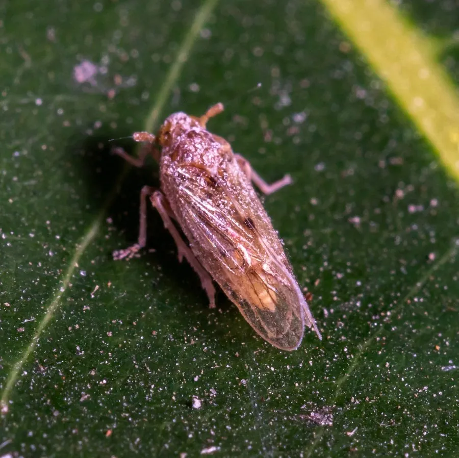

昆虫 · 动物界
褐飞虱 Nilaparvata lugens

水稻上的迁飞性害虫，成虫和若虫群集稻株基部刺吸汁液，造成枯死倒伏，是中国稻区重大害虫之一。
- 分类
- 门节肢动物门纲昆虫纲目半翅目科飞虱科属褐飞虱属
- 栖息环境
- 水稻田，成虫和若虫在稻株基部活动
- 地理分布
- 中国各稻区，以及东南亚、南亚和日本
- 保护级别
- 暂无评估；水稻重大害虫
物种志
褐飞虱成虫体长约 4–5 mm，有长翅型和短翅型两种，长翅型能迁飞，短翅型繁殖力强；体色黄褐至黑褐色，前胸背板和中胸背板有浅色斑。若虫体色灰白至黄褐，群集在稻株基部。
它专食水稻，成虫和若虫群集在稻株基部和叶鞘上刺吸汁液，大量发生时导致稻株枯死、倒伏，形成“冒穿”现象，造成严重减产。褐飞虱具有迁飞性，夏季随季风从南方迁入中国稻区，秋季回迁，是中国水稻上的重大害虫之一。防治以监测预警、抗虫品种、保护天敌、科学用药和稻田生态调控为主，在低龄若虫高峰前施药效果最好。
形态与习性
- 食性成虫和若虫刺吸水稻茎叶汁液
- 体长约 4–5 mm，有长翅型和短翅型
- 危害稻株枯死倒伏，形成冒穿，造成减产
- 迁飞长翅型能随季风远距离迁飞
- 防治监测预警、抗虫品种、保护天敌和科学用药
趣味知识
- 褐飞虱有长翅型和短翅型，长翅的负责迁飞，短翅的负责繁殖。
- 大量发生时水稻会成片枯死倒伏，稻田里出现冒穿的景象。
- 它是随季风迁飞的水稻害虫，需要跨区域监测预警。